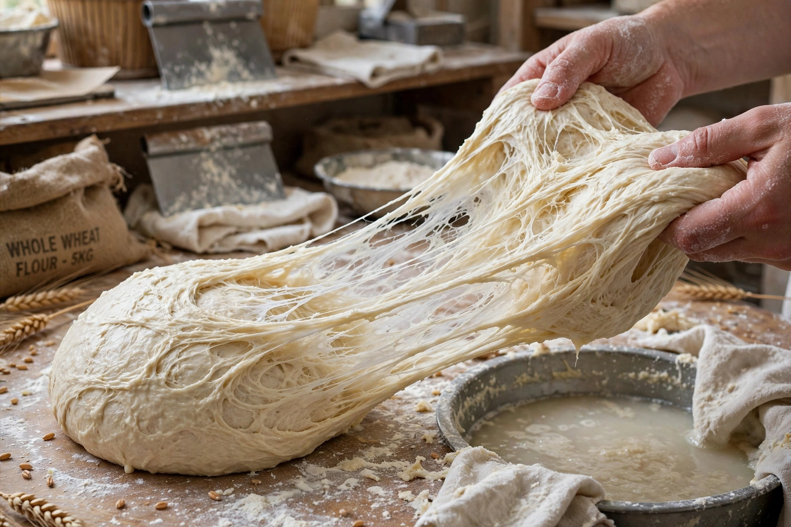

Gluten is a family of storage proteins — principally gliadin and glutenin — found in wheat and related grains, including barley and rye. When flour is mixed with water, gluten proteins form a sticky, elastic network that gives dough its strength and chewiness and helps bread rise and hold its shape. Gluten triggers the autoimmune disorder coeliac disease in susceptible people and is avoided on a gluten-free diet.

| Gluten | |
|---|---|
| Type | Protein composite (prolamins and glutelins) |
| Components | Gliadin and glutenin (in wheat) |
| Sources | Wheat, barley, rye, and their derivatives |
| Health concerns | Coeliac disease, wheat allergy, non-coeliac gluten sensitivity |
In wheat, gluten forms when the proteins gliadin and glutenin are hydrated and worked into dough. Glutenin, a long polymer cross-linked by disulfide bonds, provides elasticity and strength; gliadin provides viscosity and extensibility. Together they make up about 75–85% of the protein in bread wheat. Related prolamins occur in barley (hordein) and rye (secalin).
Gluten development through kneading is essential for leavened bread. It is also the basis of seitan, a chewy meat substitute made by washing wheat dough to remove starch. Isolated vital wheat gluten is added industrially to strengthen weak flours, and gluten appears as a stabiliser or thickener in products such as soy sauce, beer, and processed meats.
In people with coeliac disease (about 1% of the population), gluten peptides trigger an autoimmune attack on the small intestine, flattening the villi and impairing nutrient absorption. The only treatment is a strict lifelong gluten-free diet.
Wheat allergy is an immune reaction to wheat proteins that can include, but is not limited to, gluten. Non-coeliac gluten sensitivity describes symptoms attributed to gluten without coeliac disease or allergy, though its mechanisms remain debated and other wheat components such as FODMAPs may be responsible in many cases.
Regulations in many countries allow foods containing less than 20 parts per million of gluten to be labelled "gluten-free". The popularity of gluten-free diets has grown far beyond the population with diagnosed disorders, despite no established benefit for the general public.